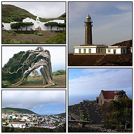
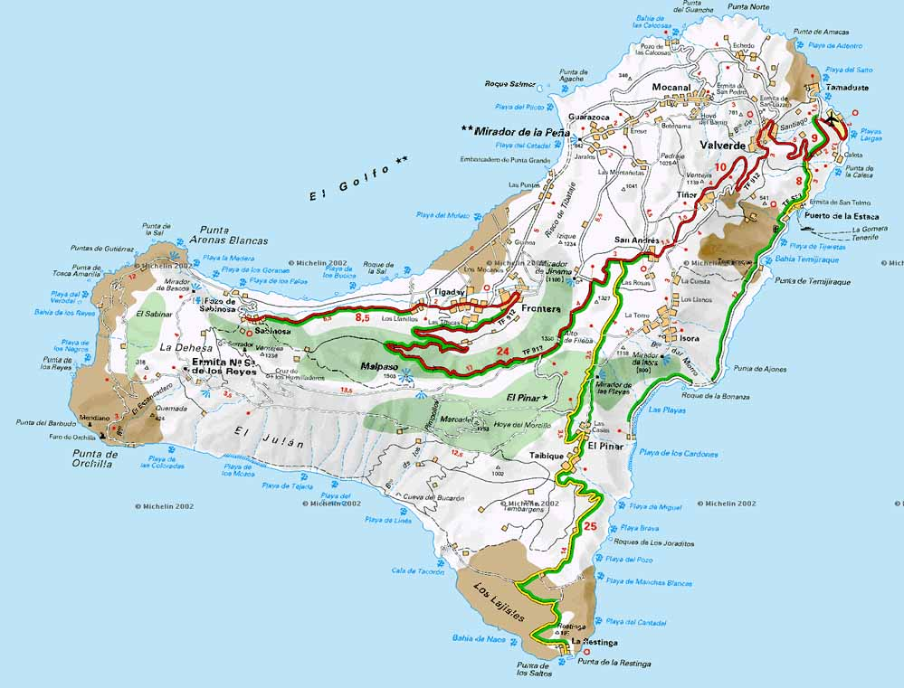
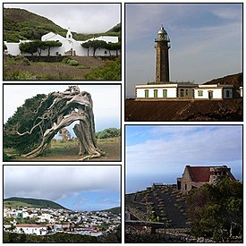
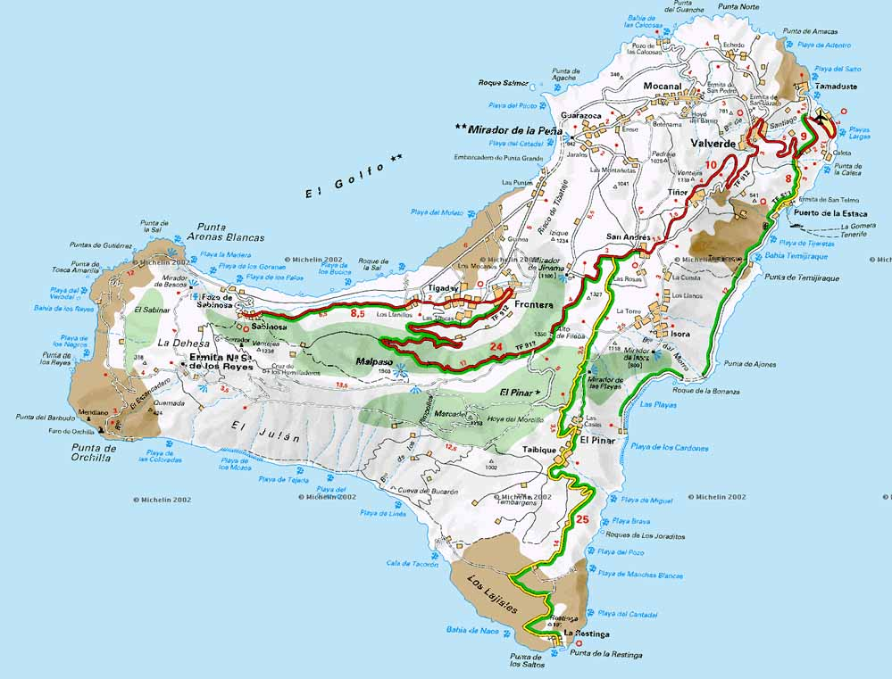

El Hierro es la más occidental y meridional de las Islas Canarias (España), situada en el océano Atlántico. Pertenece a la provincia de Santa Cruz de Tenerife. Su capital es Valverde, donde, aparte de La Villa (casco urbano), también se encuentran el Puerto de La Estaca y el aeropuerto insular. Además de Valverde, El Hierro cuenta con otros dos municipios: La Frontera y El Pinar. El Hierro tiene una población para 2017 de 10.679 habitantes2 por lo que es la séptima isla de las ocho en cuanto a población, siendo La Graciosa la menos poblada del archipiélago. También es la séptima isla canaria en superficie y la segunda más pequeña entre las ocho islas mayores con 268,71 km². La Isla de Lobos está considerada como islote por ahora y no entra dentro de las ocho Islas Canarias.
 


